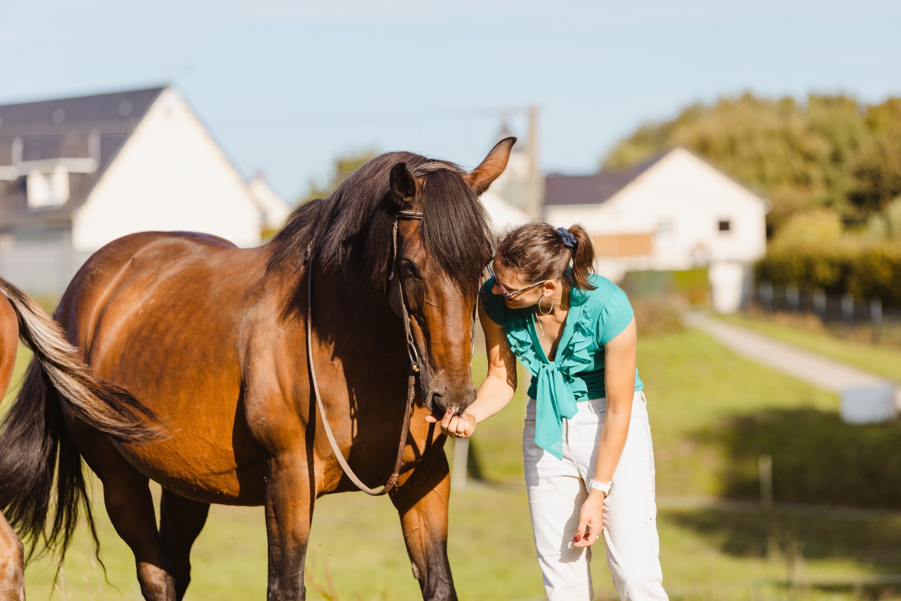

Qui je suis
Ici je me présente, ma passion, mon parcours
Ma vie avec les 4 pattes
D’aussi loin que je me souvienne, ma vie a été rythmée par les animaux à quatre pattes : cavalière et propriétaire depuis plus de 25 ans, j’ai eu la chance de grandir parmi ces grosses bestioles, mais aussi auprès des plus petites, car une minette m’a accompagnée pendant la plupart de mon enfance et de mon adolescence. Plus tard, la famille s’est agrandie et nous avons accueilli des chevaux à la maison. Commence alors un tout autre chapitre : de propriétaire, je suis passée à détentrice ; j’ai donc cherché à améliorer petit à petit leurs conditions de vie.

Des 3F au shiatsu
Les premières évolutions furent la satisfaction pleine et entière des 3F : mes chevaux avaient toujours eu accès au fourrage à volonté dans leur précédente pension et passaient le plus clair de leur journée ensemble au paddock. À la maison, nous avons donc eu la possibilité de leur offrir la liberté de mouvement tant recherchée, grâce à de grands prés, pour certains aménagés spécifiquement pour le mouvement. Aujourd’hui, mes chevaux ont le choix de se mettre à l’abri quand ils le désirent et ont accès à de grands espaces pour vivre ensemble. En parallèle, et parce que je suis toujours à la recherche d’amélioration des conditions de détention, je me suis intéressée aux médecines douces et alternatives. En complément des techniques classiques (ostéopathie, dentisterie…), je me suis penchée sur le shiatsu.

La vision d'une scientifique sur une technique empirique
Lors de mon parcours professionnel, j’ai toujours valorisé les approches scientifiques et cartésiennes. En effet, après une formation d’ingénieure en mécanique, je me suis spécialisée lors d’un doctorat en biomécanique humaine, puis j'ai travaillé en biomécanique équine. L’approche et le questionnement scientifiques sont donc ancrés dans ma personnalité — alors comment les concilier avec l’approche empirique qu’est le shiatsu ? Au départ, pour moi, le shiatsu relevait un peu de la magie, je dois l’avouer... Mais au fur et à mesure, j’ai compris que les observations issues de la médecine traditionnelle chinoise pouvaient s’apparenter à des mesures expérimentales : les praticiens chinois ont accumulé plusieurs millénaires d’expériences pour observer la réponse du corps aux stimulations exercées sur les points d’acupuncture. Même si la cartographie est empirique, les points d’acupuncture se situent souvent sur des zones biologiquement sensibles : zones de passage nerveux, fascias, jonctions muscle–tendon, ou points à faible résistance électrique... Autant d’emplacements qui peuvent avoir une action plus ou moins forte sur l’organisme. Enfin, les techniques modernes permettent d’identifier des éléments de réponse à la question « comment cela fonctionne ? » : certaines études scientifiques montrent que la stimulation des points d’acupuncture entraîne une activation nerveuse, une libération de molécules clés comme les endorphines ou l’adénosine, ainsi que des réponses musculaires ou tissulaires. Ainsi, l’activation nerveuse aurait comme résultat une modulation des circuits de la douleur et des fonctions autonomes ; la libération de molécules comme l’endorphine ou l’adénosine aurait un impact sur la douleur et le stress, ou encore la libération de peptides opioïdes endogènes dans le système nerveux central (entraînant un effet analgésique). Et même si on n’en avait pas besoin pour voir que ça fonctionne, moi, toutes ces preuves, ça me plaît !